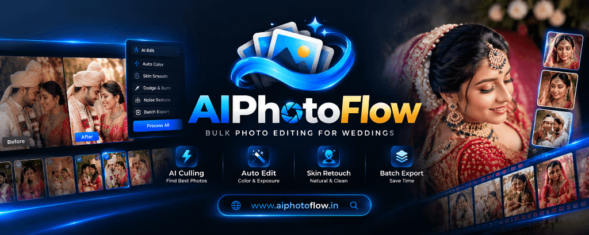

Wedding photographers ke liye 12 October ek historic din ban gaya! Quick Art Photography Academy (Siwan, Bihar) ke campus par mentor Anil Sharma aur academy ke sabhi students ne milkar cake cutting ke saath revolutionary software AI PhotoFlow (www.aiphotoflow.in) ka official launch kiya.
💡 Photographers Ka Dard: Lagan (wedding season) aate hi har photographer ke paas 4,000 se 6,000 RAW photos ka pahad khada ho jata hai. Raat bhar shoot karo, fir 4 din tak aankh kharab karke culling karo, fir Photoshop mein ek-ek photo color match karo, aur fir pen drive lekar client ke peeche bhaago "bhaiya selection de do". AI PhotoFlow ne is poori takleef ko 1 click mein khatam kar diya hai!
Quick Art Academy Mein Hua Grand Launch — 12 October Ka Celebration
12 October ko Quick Art Academy ke studio par ek alag hi utsah aur energy thi. Bihar, UP aur alag-alag jilon se aaye huye video editors aur wedding photographers is launch event ka hissa bane. Sabhi students ke samne live system par 3,500 real wedding RAW photos ko upload karke test kiya gaya — aur jo kaam ek designer ko 5 din mein karna padta tha, wo AI PhotoFlow ne sirf 8 minute mein finish kar diya!
Isi khushi mein studio mein cake kata gaya aur sabhi photographers ne is software ko Indian wedding industry ka "Game Changer" ghoshit kiya.

✨ AI PhotoFlow Dashboard: AI Culling, 1-Click Auto Color & Exposure, Skin Retouching aur Batch Export ka high-tech interface.
AI PhotoFlow Kya Hai? (Website: aiphotoflow.in)
AI PhotoFlow ek cloud aur desktop based Next-Generation AI Photo Editing & Client Selection Platform hai, jise khas Indian wedding photographers, album designers aur photo labs ki zarooraton ko dhyan mein rakh kar develop kiya gaya hai.
International software aksar Indian skin tones ko ya to bilkul white kar dete hain ya lehenga ke vibrant colors ko distort kar dete hain. AI PhotoFlow ko khas Indian wedding lighting (mandap fire, halogen yellow lights, stage LED aur flash) par train kiya gaya hai taaki lehenga, sherwani, jewellery aur natural wheatish skin tone 100% realistic rahe.
AI PhotoFlow Ke 5 Powerful Features Jo Aapka Kaam 10x Fast Kar Denge
1. AI Culling (No Blurry Shots)
4,000 photos mein se closed eyes (aankh band), motion blur, testing shots aur duplicate expressions ko AI 5 minute mein filter karke best shots alag kar deta hai.
2. 1-Click Auto Color & Exposure
Mandap ki peeli light ho ya stage ki dark shadows — AI ek click mein sabhi photos ka exposure, highlight, shadow aur white balance automatically perfect karta hai.
3. Natural Bridal Skin Retouching
Dulhan ke face par pimples, spots aur dark circles ko natural texture retain karte hue clean karta hai. Mehendi aur golden jewellery ka color bilkul safe rehta hai.
4. Online Client Photo Selection
Pen drive ya hard drive bhejne ka jhanjhat khatam! Client ko WhatsApp par secure gallery link bhejiye. Wo mobile par heart tap karke 24 ghante mein album select kar denge.
5. High-Speed Batch Export
Full resolution RAW files ko print-ready sRGB/AdobeRGB format mein export karein, jo direct Photoshop wedding album layouts ke liye ready hoti hain.
6. Same-Day Album Delivery Model
Jo studio 1 mahine mein album deliver karta hai, wo season mein kam orders le pata hai. AI PhotoFlow se aap 3 din mein album print ke liye bhej kar double kamai kar sakte hain.
Apne Wedding Studio Ko AI Powered Banayein!
AI PhotoFlow par abhi visit karein aur dekhein kaise aapka ghanton ka editing aur culling time sirf kuch minutes mein badal jata hai.
Full Video Tutorial: AI PhotoFlow Kaise Use Karein (By Anil Sharma)
Quick Art Academy ke founder aur master mentor Anil Sharma ne AI PhotoFlow ka step-by-step complete tutorial video banaya hai jisme unhone real client wedding photos par 1-click photo filter, bulk color grading aur customer selection ka live practical karke dikhaya hai:
Is Video Mein Kya Sikhaya Gaya Hai:
- AI PhotoFlow par account setup aur dashboard overview.
- 4,000 wedding photos ko drag & drop karke AI culling kaise run karein.
- Halogen aur mixed light photos ka 1-click automatic exposure aur color fix.
- Bridal face skin smoothening aur Dodge & Burn ka natural technique.
- Client ke liye password-protected WhatsApp photo selection link banana.
- Client dwara pasand ki gayi photos ko Photoshop album design layout ke liye export karna.
Comparison: Purana Manual Tarika vs AI PhotoFlow Smart Workflow
| Kaam (Task) | Purana Manual Tarika | AI PhotoFlow Smart Workflow |
|---|---|---|
| 4,000 Photos Ki Culling | 2 se 3 din (Aankh dard, thakan) | 5 se 8 minute (100% Automated) |
| Color & Exposure Match | Har photo ko alag-alag Lightroom/PS mein edit karna (15 ghante) | 1-Click Bulk Auto Edit (Sabhi lights balanced) |
| Bridal Skin Retouching | Brush aur frequency separation (1 ghanta per 10 photos) | AI Natural Skin Tone Retain & Clean in Seconds |
| Client Selection | Pen drive ya Google drive bhejna, client 2 mahine tak reply nahi karta | Mobile WhatsApp Link — 24 Ghante Mein Selection Done |
| Album Print Delivery | 1 se 2 mahine baad | 3 se 5 din mein album client ke haath mein |
Quick Art Academy Ka Vision: Bihar & UP Ke Photographers Ko Banayein Modern Studio Owner
Anil Sharma sir ne launch ke dauran sabhi students aur wedding photographers se kaha:
"Aaj ka zamana mehnat se zyada smart technology ka hai. Agar aap din bhar sirf culling aur manual photo retouching mein fase rahenge, toh aap naye clients kab pakdenge? AI PhotoFlow aapka 80% time bachata hai taaki aap wedding shoots aur business growth par focus kar sakein."
Agar aap bhi wedding filmmaking, video editing (Premiere Pro, DaVinci Resolve, EDIUS) aur professional Photoshop wedding album designing seekhna chahte hain, toh Quick Art Academy Siwan campus par 100% practical studio training aur Free Hostel ki suvidha available hai.
Frequently Asked Questions (FAQs)
AI PhotoFlow kya hai aur ye wedding photographers ke kis kaam aata hai?
AI PhotoFlow ek next-generation AI bulk photo editing software aur online client selection portal hai. Ye wedding photographers ki 4000+ RAW photos ko 5 minute mein cull karta hai, 1-click mein color aur exposure balance karta hai, aur client ko mobile par photo select karne ka aasan link deta hai.
Kya AI PhotoFlow se Indian bridal skin tone aur jewellery ka color kharab to nahi hota?
Bilkul nahi. AI PhotoFlow ko khas Indian wedding lighting aur traditional clothing ke liye train kiya gaya hai. Ye lehenga fabric, mehendi ke barik details, aur jewellery ke golden shine ko retain karte hue natural skin retouching karta hai bina kisi plastic look ke.
Client photo selection ka system kaise kaam karta hai?
Photographer ek simple WhatsApp share link generate karta hai. Client apne mobile phone par photo dekh kar heart/favorite icon par tap karke album ke liye select kar lete hain. Selection direct photographer ke dashboard mein sync ho jati hai.
AI PhotoFlow ka official website link kya hai?
AI PhotoFlow ka official portal https://aiphotoflow.in/ hai jahan se wedding photographers apna free account create karke live testing aur editing shuru kar sakte hain.
Kya AI PhotoFlow ke saath Quick Art Academy training support deta hai?
Haan, Quick Art Academy ke YouTube channel aur offline/online classes mein AI PhotoFlow ka complete practical workflow sikhaya jata hai jisse photographers same-day wedding album delivery model adopt kar sakein.
Lagan Season Mein Apna Time Aur Paisa Dono Bachayein!
Abhi visit karein www.aiphotoflow.in aur ban jaiye apne area ke sabse fast aur modern wedding photographer!